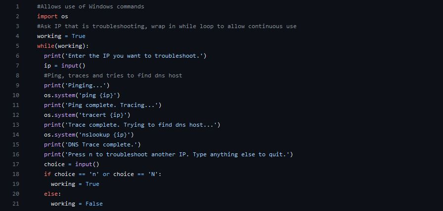
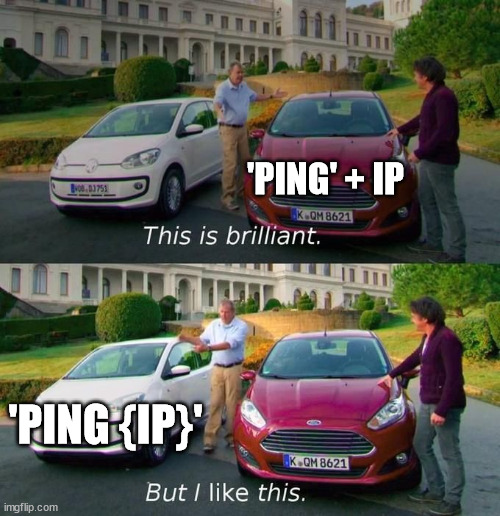

This is the start of my development blog. I wanted to add this here for a deeper insight into my coding journey for both potential employers and anyone else that is on the quest of converting from IT to development. I am not sure the consistency that this will be updated, but I wanted to give the idea a go. Just to begin, I wanted to share some simple coding I implemented in my day to day work as a network engineer a few years ago that really started my interest in development. This code is written in Python, which is generally considered the go-to for automating networking. The amount times I have to run a ping test, trace test, nslookup and so on every day as initial troubleshooting steps led me to want a solution to do it many times without retyping the commands. This was what I came up with and what led me to begin my journey to software development:
The code starts off with importing the os library in order for Python to execute the commands. We wrap the program in a while loop in order for us to be able to troubleshoot another IP after completetion without re-running the Python file. After we take the IP to troubleshoot via console input, we go through each command and once finished, prompt for input to either continue on to troubleshoot another IP or quit the program. I chose to use variable n for "new." For actually calling the commands, there are a few other ways that this could have been approached. One example is that we could have stored each command as it's own variable, then call that variable in the os.system() function. So we could have variable cmd1 = 'ping {ip}'. I personally preferred it this way for a little bit better readability. Additionally, you see that I chose to encapsulate the IP variable in curly braces rather than stating 'ping' + ip. Both will work the same of course, but I like how this looks better. Meme below for extra context.
